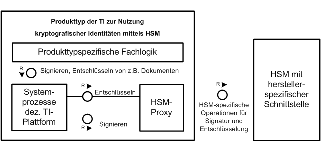

Elektronische Gesundheitskarte und Telematikinfrastruktur
Übergreifende Spezifikation
HSM-Proxy
| Version | 1.0.0 |
| Revision | 571807 |
| Stand | 15.05.2019 |
| Status | Freigegeben für interne QS |
| Klassifizierung | nicht öffentlich |
| Referenzierung | gemSpec_HSMProxy |
Änderungen zur Vorversion
Es handelt sich um die Erstversion des Dokumentes.
Dokumentenhistorie
| Version | Stand | Kap./ Seite | Grund der Änderung, besondere Hinweise | Bearbeitung |
|---|---|---|---|---|
| 1.0.0 CC | 01.03.2019 |
zur Abstimmung freigegeben | gematik | |
| Einarbeitung Kommentierung | ||||
| 1.0.0 | 08.04.19 | freigegeben | gematik | |
| 1.0.0 | 15.05.19 | freigegeben | gematik |
Die vorliegende Spezifikation definiert die logische Komponente HSM-Proxy. Sie ist eine logische Komponente zur Umsetzung in Produkttypen der Telematikinfrastruktur (TI) und kapselt die Zugriffe auf ein Hardware Security Module (HSM) über logische Operationen, um Fachanwendungen und Diensten der TI-Plattform eine einheitliche Beschreibung zur Nutzung eines herstellerspezifischen HSMs zu ermöglichen.
Die hier gestellten Anforderungen an eine solche Komponente listen die qualitativen Eigenschaften an die proprietäre Schnittstelle eines HSMs, welches ein Hersteller eines Produkttyps nutzt, um die Anforderungen seines Produkttyps mittels des HSMs umzusetzen.
Dieses Dokument richtet sich an Hersteller und Anbieter von Produkttypen der Telematikinfrastruktur, die ein HSM zur Speicherung privaten Schlüsselmaterials verwenden, um ihre fachlichen Anforderungen in Bezug auf Signatur und Entschlüsselung mittels der im HSM gespeicherten kryptografischen Identitäten der TI umzusetzen.
Dieses Dokument enthält normative Festlegungen zur Telematikinfrastruktur des deutschen Gesundheitswesens. Der Gültigkeitszeitraum der vorliegenden Version und deren Anwendung in Zulassungs- oder Abnahmeverfahren wird durch die gematik GmbH in gesonderten Dokumenten (z.B. Dokumentenlandkarte, Produkttypsteckbrief, Leistungsbeschreibung) festgelegt und bekannt gegeben.
Schutzrechts-/Patentrechtshinweis
Die nachfolgende Spezifikation ist von der gematik allein unter technischen Gesichtspunkten erstellt worden. Im Einzelfall kann nicht ausgeschlossen werden, dass die Implementierung der Spezifikation in technische Schutzrechte Dritter eingreift. Es ist allein Sache des Anbieters oder Herstellers, durch geeignete Maßnahmen dafür Sorge zu tragen, dass von ihm aufgrund der Spezifikation angebotene Produkte und/oder Leistungen nicht gegen Schutzrechte Dritter verstoßen und sich ggf. die erforderlichen Erlaubnisse/Lizenzen von den betroffenen Schutzrechtsinhabern einzuholen. Die gematik GmbH übernimmt insofern keinerlei Gewährleistungen.
Spezifiziert werden in dem Dokument die qualitativen Eigenschaften zur Nutzung eines HSMs innerhalb der Telematikinfrastruktur. Die vollständige Anforderungslage für einen Produkttyp mit Nutzung eines HSMs ergibt sich aus weiteren Konzept- und Spezifikationsdokumenten. Diese sind in dem Produkttypsteckbrief des Produkttyps zur Umsetzung dieser Komponente verzeichnet.
Nicht Bestandteil des vorliegenden Dokumentes sind die Festlegungen zur Interoperabiltität zu beliebigen HSMs.
Anforderungen als Ausdruck normativer Festlegungen werden durch eine eindeutige ID in eckigen Klammern sowie die dem RFC 2119 [RFC2119] entsprechenden, in Großbuchstaben geschriebenen deutschen Schlüsselworte MUSS, DARF NICHT, SOLL, SOLL NICHT, KANN gekennzeichnet.
Sie werden im Dokument wie folgt dargestellt:
<AFO-ID> - <Titel der Afo>
Text / Beschreibung
[<=]
Dabei umfasst die Anforderung sämtliche zwischen der ID und der Textmarke angeführten Inhalte.
| Offener Punkt: Das Kapitel wird in einer späteren Version des Dokumentes ergänzt. |
|---|
Der HSM-Proxy ist eine logische Komponente zur Umsetzung innerhalb eines Produkttyps der Telematikinfrastruktur, welcher kryptografische Identitäten mittels eines HSMs nutzt. Der HSM-Proxy kapselt dabei die herstellerspezifische Schnittstelle des HSMs, um die Beschreibung der fachlichen Anwendungsfälle des Produkttyps zu vereinheitlichen.
Die Nutzung des HSMs innerhalb dieser Anwendungsfälle erfolgt über die logischen Operationen zum Signieren mittels privaten Schlüssels im HSM und zum Entschlüsseln mittels privaten Schlüssels im HSM.
Sowohl die Definition der konkreten Schlüsseloperationen sowie alle administrativen Operationen, einschließlich der Personalisierung des HSMs mit kryptografischen Identitäten der Telematikinfrastruktur, stehen außerhalb dieser Spezifikation und werden im nutzenden Produkttyp festgelegt.
Das vorliegende Dokument stellt hier lediglich qualitative Anforderungen an die Nutzung der spezifischen Schnittstellen des HSMs.
Das folgende Kapitel ordnet den HSM-Proxy in die Umsetzung innerhalb eines konkreten Produkttyps zur Nutzung des HSMs ein.
Der HSM-Proxy kapselt den Zugriff auf ein HSM für die Operationen der Signatur mittels privaten Schlüssels und Entschlüsselung mit privatem Schlüssel in einem HSM. Die folgende schematische Darstellung zeigt die logische Zerlegung eines Produkttyps der TI, der die kryptografischen Identitäten der TI in einem HSM in seine produkttypspezifische Fachlogik einbindet.

Abbildung 1: Einordnung in die Telematikinfrastruktur
Eine weitere Untergliederung der Aufbaustruktur der Komponente ist nicht erforderlich.
Sei sign() eine logische Operation zur Erzeugung einer Signatur mittels privaten Schlüssels in einem HSM, die der HSM-Proxy der Fachlogik eines Produkttyps anbietet. Dann kapselt der Aufruf sign(data, identitity) die herstellerspezifische Implementierung innerhalb des Produkttyps. Der HSM-Proxy führt innerhalb vonsign(data, identity) alle Operationen mit der Schnittstelle zum HSM aus, um eine Signatur über data vom HSM mit dem privaten Schlüssel der referenzierten Kryptografischen Identität der TI identity durchführen zu lassen. Im Ergebnis der Operation sign() steht den fachlichen Anwendungsfällen des Produkttyps intern entweder im Erfolgsfall die signature zur Verfügung oder andernfalls ein herstellerspezifischer error.
Sei decrypt() eine logische Operation zur Entschlüsselung mittels privaten Schlüssels in einem HSM, die der HSM-Proxy der Fachlogik eines Produkttyps anbietet. Dann kapselt der Aufruf decrypt(cipher, identity) die herstellerspezifische Implementierung innerhalb des Produkttyps. Der HSM-Proxy führt innerhalb vondecrypt(cipher, identity) alle Operationen mit der Schnittstelle zum HSM aus, um den entschlüsselten Klartext von cipher mittels HSM und des privaten Schlüssels der referenzierten kryptografischen Identität der TI identity erstellen zu lassen. Im Ergebnis der Operation decrypt() steht den fachlichen Anwendungsfällen des Produkttyps intern entweder im Erfolgsfall der Klartext plain zur Verfügung oder andernfalls ein herstellerspezifischer error.
Zusätzlich zur logischen Kapselung der herstellerspezifischen Schnittstelle gelten die folgenden Anforderungen in Bezug zur Kommunikation mit einem HSM.
A_17714
Die Komponente HSM-Proxy MUSS den in einer Signatur- oder Entschlüsselungsoperation mittels HSM zu verwendenden privaten Schlüssel im HSM eindeutig referenzieren. <=
A_17715
Die Komponente HSM-Proxy MUSS den Nutzer als Eigentümer einer kryptografischen Identität mit privatem Schlüssel in einem HSM eindeutig identifizieren und sich als dieser gegenüber dem HSM mit herstellerspezifischen Mitteln authentisieren. <=
A_17716
Die Komponente HSM-Proxy MUSS alle Operationsaufrufe zu einem HSM ausschließlich über eine vertrauliche, integritätsgeschützte Schnittstelle des HSMs tätigen. <=
Ein gesondertes Informationsmodell der durch die Komponente verarbeiteten Daten wird nicht benötigt.
Eine Darstellung der hardwareseitigen Verteilung der Komponente in Produkttypen der TI bzw. seiner Teilsysteme und der Einbettung in die physikalische Umgebung wird nicht vorgegeben.
| Kürzel |
Erläuterung |
|---|---|
| HSM |
Hardware Security Module |
| TI |
Telematikinfrastruktur |
Das Glossar wird als eigenständiges Dokument (vgl. [gemGlossar]) zur Verfügung gestellt.
Die nachfolgende Tabelle enthält die Bezeichnung der in dem vorliegenden Dokument referenzierten Dokumente der gematik zur Telematikinfrastruktur. Der mit der vorliegenden Version korrelierende Entwicklungsstand dieser Konzepte und Spezifikationen wird pro Release in einer Dokumentenlandkarte definiert; Version und Stand der referenzierten Dokumente sind daher in der nachfolgenden Tabelle nicht aufgeführt. Deren zu diesem Dokument jeweils gültige Versionsnummern sind in der aktuellen, von der gematik veröffentlichten Dokumentenlandkarte enthalten, in der die vorliegende Version aufgeführt wird.
| [Quelle] | Herausgeber: Titel |
|---|---|
| [gemGlossar] | gematik: Einführung der Gesundheitskarte – Glossar |